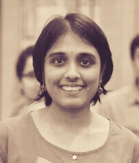

Hi! I am a final year PhD student at the Department of Computer Science and Engineering, IIT Bombay and School of Physics and Astronomy, Monash University. I work on medical image computing and I am being supervised by Dr.Ajit Rajwade, Dr.Sharat Chandran and Dr.Imants Svalbe.
My thesis deals with the development of reconstruction algorithms for Computed Tomography (CT) with an aim to reduce the exposed X-ray radiation to the subject being imaged. Towards this, I work on reconstruction from both few-view and low-dose measurements. Some sub-problems I work on include: intelligent grouping of 2D slice measurements, registration in Radon and Fourier domain, and effective use of prior information in longitudinal studies.
My project page is under construction! It will fully up in a couple of weeks.
Here's my CV [Last updated- April 2019]